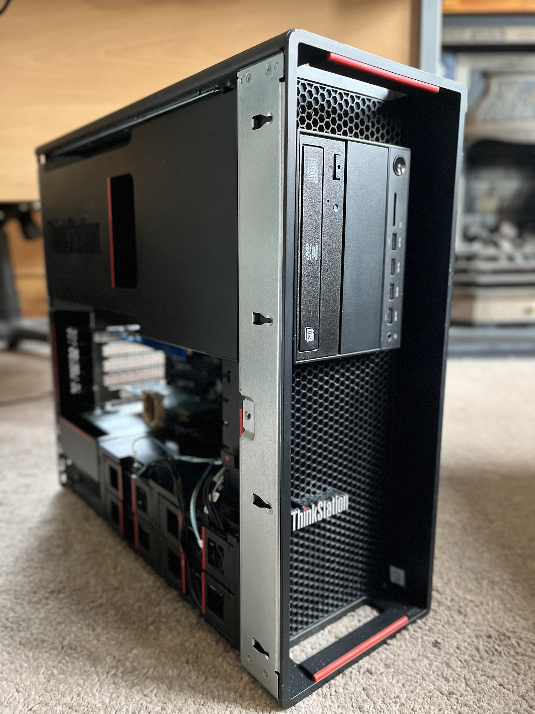
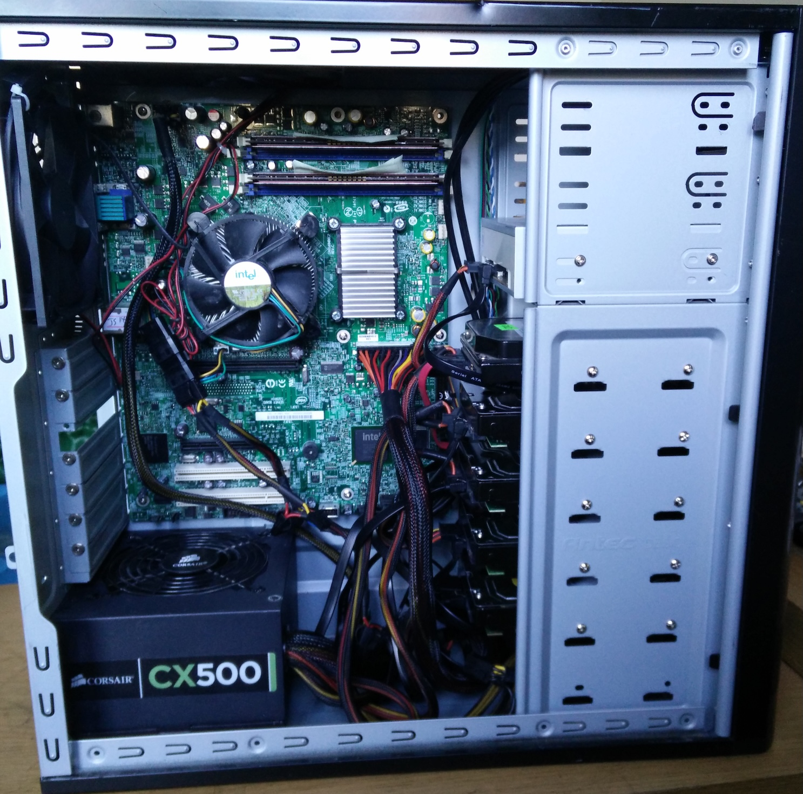
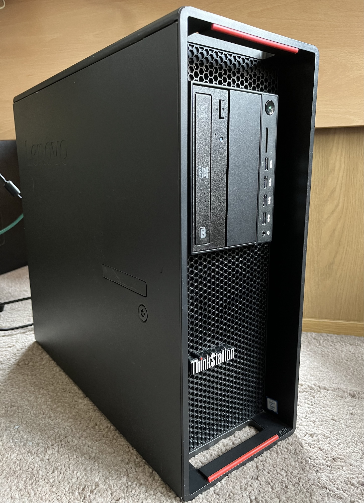
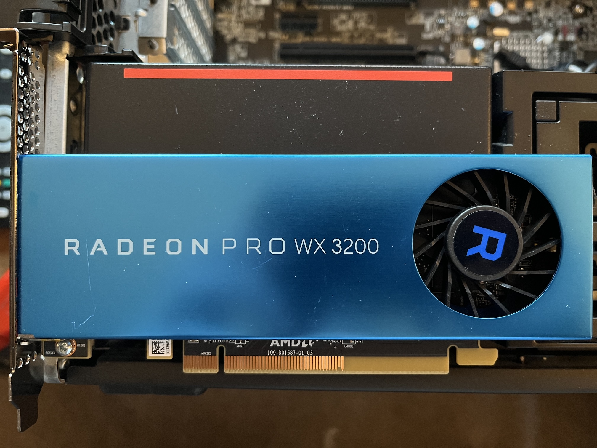
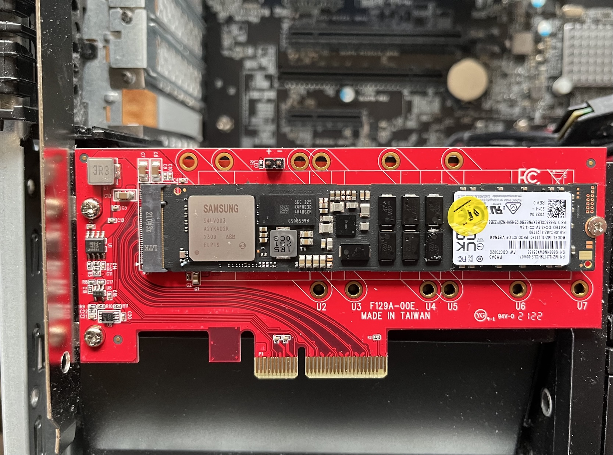
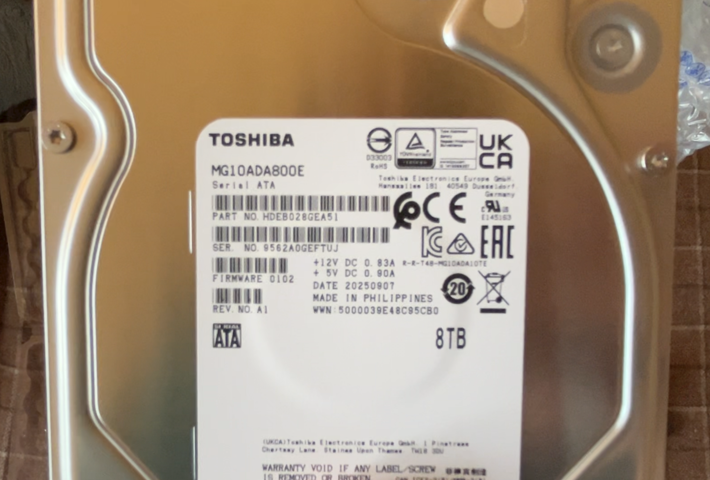
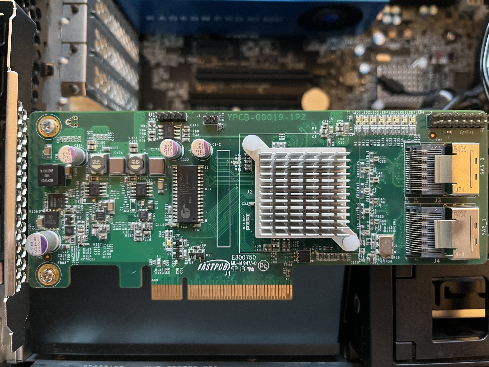
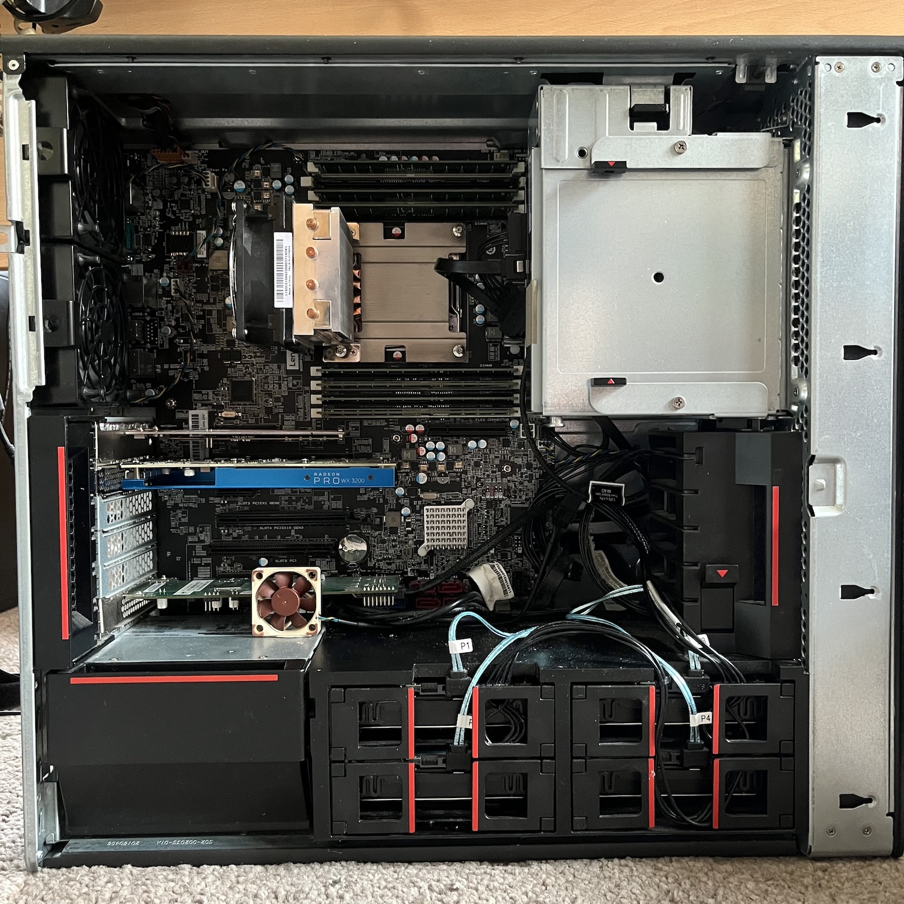
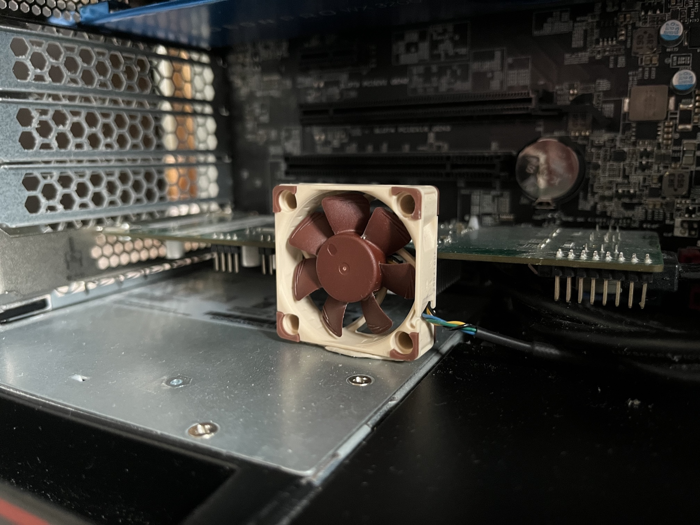

The dawn of 2025 brought with it the growing need for me to retire my aging home file server (known as Skye) and fulfill my desire to begin resurrecting my homelab in some form.
Until now, any homelab environment I’ve had has consisted of a bunch of disparate machines of varying vintage dedicated to a handful of jobs, which while fun, takes up a ton of space and eats into the power bill. Given today’s current climate and how cramped my flat is, this wouldn’t do. Converging as much as I can into one big hypervisor server was the way forward.
And we’re a quarter into the 21st century; not using virtualisation in some form would be madness.
Skye Mk I was far from fit to be repurposed for this job, so unfortunately, its long overdue retirement and replacement was necessary.
Skye Mk I
I built (or more like frankensteined together) Skye Mk I way back in 2015 from a smattering of spare parts I had amassed and some drives and a case I ordered from eBay. At the time the server was part of a larger homelab environment so the scope of the machine was really just to serve my desire and growing need for reliable network storage and some tinkering.
Skye started life configured as:
- Intel Core 2 Quad Q6600 on an Intel S3200SHV Server motherboard
- 4GB DDR3-1333
- 4x SATA 1TB WD Black/RE4 configured in a RAID5 via
mdadmfor ~3TB space - 1x SATA 40GB Samsung Spinpoint as a boot drive
- Corsair CX500 PSU
- All built in an Antec 300 case (an absolute classic)
- Running Debian 8 Jessie
After some drive failures a few years into its life and a desire to cut down on power consumption from the frankly overkill Q6600, it ended up as:
- Intel Core i3-2120 on a Gigabyte Z79-D3H motherboard
- A mix of 5 1TB drives, some WD Black/RE4, some WD Red, now configured in a RAID6 via
mdadm(still ~3TB of space) - Running Debian 9 Stretch

Ten years on, that particular homelab setup was long gone after several house moves, and the machine was really starting to show its age and limitations:
-
Some of the drives were passing 80,000 power-on hours and starting to show signs of failure
-
The boot drive was well over 100,000 hours (and somehow still going! Those Samsung Spinpoint drives were ridiculously reliable)
-
I was running out of space on the RAID
-
Debian 9 was long out of support and I was getting a tad worried about getting my legacy configs to work on a much more modern OS
-
That i3, while power efficient, was not what we’d call gutsy by 2025, and any LGA1155 CPU upgrade (say to an i7-3770 or Xeon equivalent) was pricey, power hungry and still not ideal for any future use case expansion
-
And worst of all: I was beginning to notice bit-rot on some of my files.
When configuring the RAIDs way back then, I had chosen the veteran JFS as the filesystem. JFS is very resilient, light on resources, and performant across all manner of file sizes and types. However, by today’s standards it’s an absolute antique that’s imminently about to be orphaned from the Linux kernel, and as such has no modern data integrity features or snapshotting that the likes of ZFS or Btrfs do (not a surprise given it was designed for the equally antiquated IBM OS/2). As a result, many years of files sitting dormant on the RAID and some of the disks beginning to show signs of failure resulted in bit-rot as JFS has no way of noticing or avoiding such a thing.
This choice of filesystem was also motivated by the awkward landscape of filesystems on Linux at that time. Back then, XFS had a reputation for volume corruption on power loss, Btrfs was still fairly new and its parity RAID implementation was not recommended if you cared about your data, ZFS on Linux was still in its relatively early days (and I wasn’t as comfortable with the likes of FreeBSD or Solaris/illumos at that time with their native ZFS support), and while ext3/4 was an option, they were the safe, boring option. JFS will always have a special place in my heart, but it was time to move on to something modern.
The new server was going to absolutely smoke this thing.
The New Machine
For the last couple of years the question circled around my head of what this new machine should look like.
My first thought was naturally to do another custom build. However, the more I priced it up the more I felt I wasn’t getting my money’s worth. This time round I wanted a stable server/workstation platform as I intended to converge much of my homelab workloads onto one machine via virtualisation as mentioned earlier, so this meant I wanted a machine with ECC support, support for more than 32 or 64GB RAM, lots of CPU cores, and plenty of PCIe lanes. With what new or modern used, off-the-shelf hardware is available in Scotland, that just wasn’t going to happen without paying out the nose for it.
After a while I settled on sourcing a used pre-built workstation of some kind as they are plentiful, ticked those boxes and often ridiculously cheap as business e-waste. The problem with that though was: what machine? So many pre-built workstations are almost all proprietary inside and have ludicrous manufacturer restrictions, and there was also the age and power consumption issues.
In the end I decided on basing the new server on a Lenovo Thinkstation P510.

My first choice had been to try and opt for something a bit more modern than an LGA2011-3 Broadwell-E era machine (given they’re approaching ten years old at the time of writing), such as a Skylake-SP/Cascade Lake-SP Xeon Scalable machine like the Thinkstation P720 or P520. While that platform certainly has its advantages over Broadwell-E, there were a few showstoppers for me:
-
A dual socket Xeon Scalable machine would frankly just be complete overkill – my electricity bill is high enough as is. Good thing I missed out on some good deals on P720s.
-
The Thinkstation P520’s base configuration only had two hard drive bays, unlike the P510’s four, and the optional kit to add the extra bays was very hard to come by and no machine I saw had it installed.
-
Other Xeon Scalable machines like the Dell T7820 supported a maximum of four 3.5" HDDs, while the Thinkstations could be expanded to six via their 5.25" bays.
In the end, after much deliberation, I couldn’t shake how the P510 was probably my best choice. I had worked on one before and always appreciated its build quality, tool-less case and how stable and reliable they are. I’ve also still got a soft spot for LGA2011-3 machines given my own personal custom-built workstation is still based on a Haswell-E Xeon and I still feel absolutely no need to upgrade.
A word to the wise - ignore the absolutely miserable people you find online who would decry such machines as “e-waste”!
Building the Server
Now that I had my lovely Thinkstation P510-shaped piece of e-waste, it was time to start building it out. My machine came configured with:- Intel Xeon E5-1620v4
- 32GB DDR4-2400 ECC RDIMM
- 650W PSU
- And basically nothing else; no drives or GPU
A decent machine for its time, but it wasn’t going to quite cut it for what I had planned for it. I still needed to get:
- A higher core count CPU that also wasn’t uselessly slow in single core performance as some high core count Broadwell-E Xeons are
- More RAM
- A GPU (LGA2011-3 machines have no onboard video)
- An SSD for the OS and VM storage
- Some decent capacity HDDs for my network storage needs
- An HBA to connect said drives to the machine
For the CPU, I picked up an Intel Xeon E5-2697Av4 on eBay; a 16-core, 32-thread mildly arthritic behemoth with a base frequency of 2.6GHz, a max turbo of 3.6GHz, 40MB of L3 cache and 40 PCIe Gen3 lanes. It’s a somewhat unique Broadwell-E Xeon in that is has the high core count but also has a decent base and turbo frequency. It’s a nice middle ground of a CPU for my uses and is still quite gutsy in multi-core performance in 2026.
For RAM, I picked up an extra 64GB of DDR4-2400 ECC RDIMM from bargainhardware.co.uk, for a total of 96GB. While it’s a ridiculous amount of memory compared to its predecessor, I knew ZFS would happily swallow a decent amount of that up, and it gave me plenty of overhead for any future projects. (This was also just before the RAMpocalypse of 2026!).
For a GPU, I didn’t need anything powerful at all. I just needed something to provide a video output from the machine and be powerful enough for some media transcoding and other compute tasks in the future. I ended up just throwing in a spare AMD Radeon Pro WX3200 I saved from the pile of e-waste we had at work. So far for media transcoding it’s done a grand job!

For an SSD, I originally wanted to be fancy and go for a 2x RAID1 NVMe setup, but I couldn’t stomach the cost, even with the cheapest of NVMe SSDs. Instead, I decided to pick up a single enterprise grade M.2 NVMe SSD in the form of a 1.92TB Samsung PM9A3 from bargainhardware.co.uk. Since I didn’t have the Thinkstation’s proprietary M.2 adapter card (“Flex Adapter”) for its proprietary slot (which wouldn’t accomodate a 22110 size SSD anyway), I threw the SSD on a Startech PCIe-M.2 adapter card.

The HDDs were an entire saga unto themselves. HDD costs were creeping up even in 2025 (thanks very much AI!), and so the price brand new drives of any half-decent capacity and reliability made me baulk. I originally wanted to go with five drives of at least 8TB each in RAIDz2, giving me a total storage capacity of ~21TB, and so I decided to chance going for used/recertified enterprise grade drives as I had done before. bargainhardware.co.uk had a great price on some 8TB Dell EMC (HGST OEM) SATA drives, and figured they’d be perfect.
Oh boy was I wrong.
All five drives came with ~50,000 power-on hours on them with a significant amount of read/writes already - basically a full lifetime of usage in a datacenter where you’d be looking to pull and retire them at that point. After some SMART tests, two of them failed their tests with Uncorrectable LBA errors and very high Raw Read Error Rates. I wasn’t going to mess around with these any further; there’s no way I could trust them with my data. After a lot of back and forth with bargainhardware.co.uk, they eventually accepted an RMA on them.
Back to square one! After a bit more shopping, I grit my teeth and decided to shell out for 4x brand new 8TB Toshiba MG10 enterprise HDDs, for total of ~14TB in RAIDz2. It was less capacity for a LOT more money, but it was really the only option left and Scan.co.uk had them priced fairly compared to the likes of lesser quality Seagate drives (anyone who knows me in IT long enough will know my utter disdain for anything Seagate).

An HBA was arguably unnecessary, as I probably could have just passed the P510’s onboard SATA controller through to my storage VM. However, I wanted to keep my options open for using the onboard controller for other things, and I had no idea yet how the IOMMU groups looked on the P510 and whether it would even be possible to pass through the onboard controller without other issues once the machine was fully configured. So, I picked up a cheap LSI 9211-8i SAS HBA flashed to IT Mode from eBay. An old, but still reliable controller.

And with that, the build was finally done!

What's in a Name?
Pretty much since Skye Mk I was built, I’ve maintained a naming scheme on my network of naming machines after Scottish islands, with Skye of course being named after the Isle of Skye, which is the second largest of all the islands in Scotland. Fitting, since it was big, heavy, and had the most storage of any machine on my network at the time.
Naming this new machine however after just one island felt ill-fitting, given it was designed to be the convergence of what would otherwise be many systems. Island groups such as Orkney or Shetland were already in use, and other groups like the Small Isles or St Kilda felt far too diminutive for this beast.
The next biggest island in Scotland after Skye is Lewis and Harris, which belong to the Western Isles/Outer Hebrides – bingo!
And so the new machine has been christened Western Isles! It’s not geographically correct given Skye belongs to the Inner Hebrides, but it’ll do – the Western Isles are made up of a lot of islands.
Configuring Western Isles
The months of thinking and spending far too much money was finally over; the machine was finished!
…what? You mean there’s more to do?!
Operating Systems
The choice of OS for this new machine was a natural one. Skye Mk I was really just built back in the day to be a file server, and maybe do some extra tasks in the homelab every now and then, so bare-metal Debian with the odd LXC container seemed a sensible choice back then and performed admirably. However, given I wanted this new machine to converge a bunch of homelab systems and services together, a hypervisor had to come into play, and so I went with Proxmox VE 9. It’s Debian, it’s free, it’s powerful, and I’m very familiar with it.
Skye’s New Home
The choice of OS for Skye Mk II within its new virtualised home however required a bit more thought. I had toyed for years about migrating Skye Mk I to something other than Debian (especially once Debian 9 was EOL) such as CentOS or openSUSE Leap, but neither felt appropriate anymore given CentOS is no longer CentOS, and openSUSE is going through some changes also (namely deprecating YaST – an abysmal idea in my eyes).
My first thought was to go with TrueNAS just to make my life easier. I had long heard people wax lyrical about it, and the idea of a FreeBSD based system with a solid web interface sounded right up my alley. Unfortunately by late 2025, TrueNAS had just switched over to Linux and discontinued their old FreeBSD-based version. Ordinarily this wouldn’t be a problem on its own, however it was still in a state of flux and upon testing it, its web interface was buggy and felt like it was getting in my way at every turn.
My other thought was why not just go with FreeBSD itself? TrueNAS was originally based on it anyway, I’ve been enjoying using it for other server tasks, it’s got first class ZFS support, it’s lightweight and sensible… so that’s exactly what I did! And as of the time of writing in 2026, this was absolutely the right choice.
Setting this VM up was a breeze. PCIe Passthrough has gotten a lot simpler in later versions of Proxmox and Linux on Intel, so it was trivial to just pass the LSI HBA through to FreeBSD and create a new ZFS zpool on the new disks. The old server had multiple Samba shares that were just linked to directories on the RAID, which worked but wasn’t the tidiest or most secure. I opted to replicate this via ZFS datasets instead and link Samba to those. A quick rsync from the old server to the new one later and we were back up and running with significant performance improvements!
Other Services
DNS (oh no…)
I had been wanting to bring back having an internal DNS solution in the homelab again (despite the pain that will likely cause at some point). I opted to go for PowerDNS running on FreeBSD with the PowerAdmin web interface.
It’s not the most common option among homelabbers, however I had not so long ago brought this exact setup into production at my day job having worked out how to get both projects running on FreeBSD without much useful documentation. I was quite pleased with it in production, and while the setup process was fresh in my mind, I decided to use it for home too.
I’ve documented the setup process my PowerDNS setup on FreeBSD here if you’re interested.
Jellyfin
What’s a home server without a media server?
I’m an avid physical media collector and keep backups of what I can, but I had never bothered setting up much of an interface to interact with that beyond using XBMC/Kodi over the years.
I had decided early on that I was going to set up Jellyfin in an LXC container rather than through Docker, since Proxmox has native LXC support and I’m quite familiar with LXC. However, while scrolling through Proxmox’s LXC templates, I noticed they had a Gentoo container template! I can’t ever do anything the normal way can I?
Getting Jellyfin set up on Gentoo was very simple as there is an ebuild provided in their repository; the challenge came from getting hardware transcoding to work correctly under it.
Giving the container access to the Radeon GPU was simple enough, but working out exactly how to get the drivers for it working in the container was a huge chore – most of that probably stemming from my very rusty Gentoo knowledge (it’s been 10 years since I last used it). Eventually it transpired that there was a permissions issue with the container accessing system devices on the host like /dev/dri/renderD128 and /dev/dri/card0, so fixing that got the driver working.
Transcoding wasn’t fully working correctly though until I had the correct version of ffmpeg on the system. While Gentoo maintains a Jellyfin ebuild, there is no ebuild for Jellyfin’s fork of ffmpeg; instead it just depends on the regular ffmpeg which does sort-of work but not entirely. I ended up resorting to just downloading Jellyfin’s ffmpeg fork and replacing the system’s ffmpeg binaries with it. I might submit an ebuild for jellyfin-ffmpeg to Gentoo at some point to fix this.
Teething Problems
Ghost in the Machine
Early on I noticed some strange instability; the machine would run fine for hours, even days, and suddenly crash. My first thought naturally turned to the RAM I had just purchased and installed.
I ran the venerable Memtest86+ for several hours and it found nothing wrong, the machine was solid the entire time! I reseated all the RAM and cleaned the slot contacts, and again, after maybe a day or two, the machine would crash.
After some pouring through logs and dmesg, I noticed the machine was reporting MCE Memory Errors with rapidly increasing frequency. It was trivial from those errors to locate the offending DIMM and pull it from the machine. It meant I was now down to 88GB over seven DIMMs (eww), but the machine has been rock solid since.
Feelin' Hot, Hot, Hot…
In some of the previous images, you may have noticed a small Noctua fan next to the LSI HBA.

Some form of more direct cooling for the HBA was really needed, as early on I noticed its heatsink getting uncomfortably warm to the touch. I knew beforehand that these LSI HBAs do run quite warm and are really designed for a system with strong direct airflow, like a rackmount server. I did wonder if I’d be covered here, as the P510 does have direct cooling of the expansion card area via a pretty beefy 92mm fan that can really shift some air (alongside ducting that keeps the airflow channels of the CPU/RAM area and expansion card area separated). However, at full tilt, that fan is loud. When the machine gets racked, I’ll revisit ramping up that fan, but for now that sort of volume was not acceptable.
The other challenge was that I had opted to put the HBA in the bottommost PCIe Gen2 x4 slot, which didn’t provide enough clearance for me to simply just strap a small fan onto the its heatsink. In the end, I just opted to blu-tac a 40mm Noctua fan right in front of the HBA to direct air across the heatsink. It’s a hack, but it’s worked very well and has noticably dropped the temperature!
Networking Nightmares
I noticed quite early on that my FreeBSD VMs had rather lackluster network throughput. When tested, I could get full Gigabit speeds in one direction, but was barely scraping 300Mbps in the other. After a bit of searching and experimenting, I discovered that the default virtual NIC Proxmox defaults to, the Intel E1000, had some issues in FreeBSD, as did its counterpart the E1000e.
The solution was very simple: I simply switched the FreeBSD VMs to use Virtio for networking instead.
Proxmox itself however was also exhibiting some odd networking behaviour. Every so often the machine would become inaccessible over the network, and peering at the console revealed it was spitting out eth0 Detected Hardware Unit Hang messages. Either reseating the network cable or resetting the machine would bring it back up, but it was only a matter of time until this would show again – usually when the machine was under some network load.
After a bit of research, it seems there’s a known hardware bug in Intel I21x NICs, like the onboard I218-LM on the P510, which results in some quirky behaviour by the e1000e driver on Linux (as detailed in this excellent blog post by Garrett Laman here ). That post details a fix that uses ethtool to disable all of the hardware offloading features on the NIC, which does solve the issue. Surely though this is fixable to some degree in the Linux driver at this point?
So how's it going?
Approaching a year on, all I can say is this machine and its setup have simply been a joy.
The Lenovo P510 is a brilliant machine even today. It’s been as stable as a rock (apart from the odd NIC issue that’s a Linux-specific problem), and any time I’ve had to bring it down for maintainence, it’s been so easy to work on. I only have a couple of small gripes with it:
-
Its BIOS/UEFI is a bit… quirky. It has two UI options; if you pick the more basic BIOS-style UI it reveals options in the BIOS that aren’t available in the graphical UI that if you touch, cause the machine not to POST.
-
It has no proper out-of-band management (like IPMI, iDRAC, iLo etc). It does support Intel AMT/vPro which gives you some options and ordinarily I would say counts as OOBM, but naturally, as it’s a Broadwell-E machine, it has no on-board GPU, so the AMT/vPro KVM isn’t available. You do get serial console access though which has come in handy.
-
It has a rather odd layout of expansion slots on the motherboard. In order you get a PCIe x4 Gen3, PCIe x16 Gen3, PCIe x1 Gen2, another PCIe x16 Gen3, regular PCI, and a PCIe x4 Gen2. An excellent compliment of slots (and I do much appreciate having legacy PCI on board), but their layout makes things rather awkward. For example, the PCIe x1 Gen2 slot is pretty much unusable if the top x16 is populated. The mix of Gen2 with Gen3 is also a tad frustrating and did make me think about what cards should go where when building.
-
The onboard NIC issue is a tad annoying. If it doesn’t end up fixed or worked round in Linux at some point, I’ll consider throwing in a PCIe NIC; though given said layout of the expansion slots, it’ll take some thinking as to where to put it and what sacrifices might need to be made for future expansion by doing so.
When it comes to actually using the machine however; I’m over the moon. Proxmox was definitely the right choice, and moving Skye over to FreeBSD in a VM with ZFS was an even better choice. FreeBSD’s been rock solid, so easy to configure and maintain, and moving to a filesystem that was actually developed this century has given me such peace of mind. The RAIDz2 also has around double the performance of the array in Skye Mk I; I can now fully saturated a 1Gb connection without bottlenecks on writes on large transfers, and there’s easily enough performance to saturate a 2.5Gb connection also.
I look forward to finally getting it racked up! :)